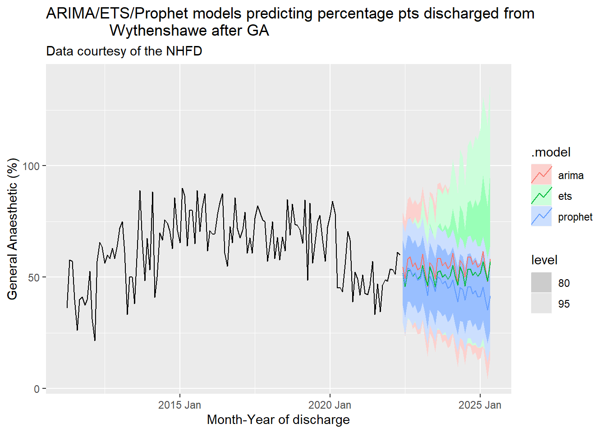
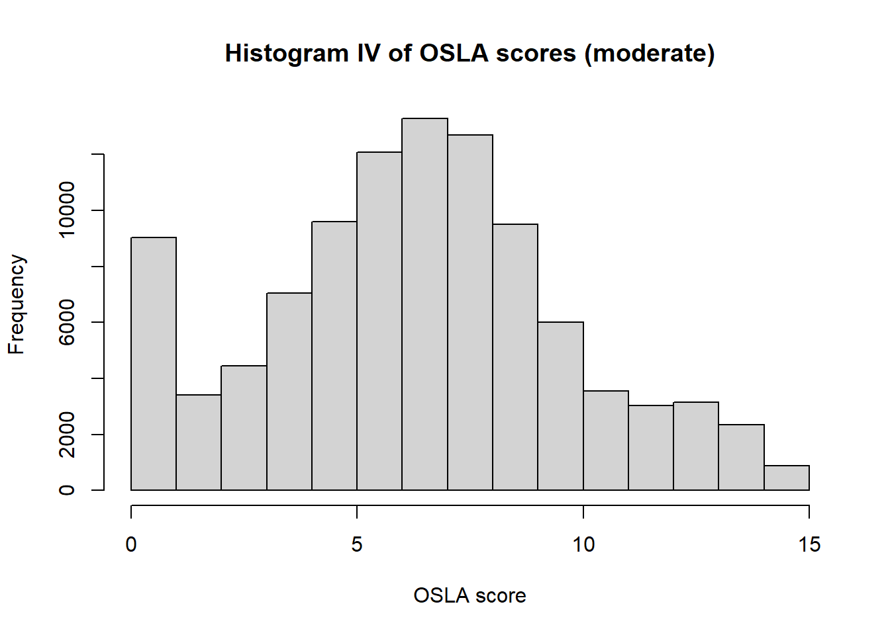

Show the code
library(dagitty)
library(lavaan)Draft v0.1
(P) – Patients presenting to Emergency Departments in South Manchester with radiologically confirmed hip fracture who are aged 65 and over and have none of the following exclusion criteria:
Lack of a study partner or caregiver
Active infection
History of hypersensitivity to or unacceptable side effects of Anakinra
Current substance misuse
Active malignancy
Acute stroke or TIA
Currently participating in clinical trial of an investigational medicinal product (CTIMP)
Women of child-bearing potential
Neutropenia of any cause.
(I) – Anakinra 100mg in given subcutaneously at time 0 [presentation to ED] then once daily for 72 hours during the perioperative period.
(C) – Normal saline given subcutaneously at time 0 [presentation to ED] then once daily for 72 hours during the perioperative period.
(O) – 1°) Severity of delirium postoperatively as measured by the XXXXXXXX 2) (2°) Time to first weight bearing postoperatively 3) (3°) Time until medically fit for discharge postoperatively 4) (3°) Safety of Anakinra during the perioperative period and in wound healing 5) (3°) Tolerability of Anakinra versus placebo in terms of common side effects 6) (3°) Effect of Anakinra on 30-day mortality
(T) – Recruitment period: 24 months; Treatment/assessment period: to 72hrs postop, measured from entering the recovery area after surgical repair.
library(dagitty)
library(lavaan)In order to determine the minimum recruitment rate for the clinical trial, the number of people receiving various types of anaesthetic, the surgical modalities involved etc., we conducted a number of time series analyses and forecasts using Autoregressive (ARIMA), exponential state-space smoothing (ETS) and Facebook’s “Prophet” model. Final expected values were based on simple unweighted averages of the three estimates. 80% and 95% confidence intervals for each prediction are shown in the relevant plot(s).
The NICE guidance on management of hip fracture recommends:
1.2.1 Perform surgery on the day of, or the day after, admission.
1.2.2 Identify and treat correctable comorbidities immediately so that surgery is not delayed by:
- anaemia
- anticoagulation
- volume depletion
- electrolyte imbalance
- uncontrolled diabetes
- uncontrolled heart failure
- correctable cardiac arrhythmia or ischaemia
- acute chest infection
- exacerbation of chronic chest conditions
# Descriptive statistics and forecasting
# for the Hip fracture population
library(tidyverse)
library(rms)
library(fable)
library(tsibble)
library(feasts)
library(urca)
library(downloadthis)
library(fpp3)
library(fable.prophet)
los <- read.csv("./NHFD_Data/los_apr_22.csv")
names(los) <-c("my", "ptnum",
"acutelos",
"acutelosannual",
"trustlos",
"trustlosannual" )
vol <- los |> select(my, ptnum)
vol$my <- lubridate::my(vol$my)
ts_vol <- vol %>%
mutate(my = tsibble::yearmonth(my)) %>%
tsibble()
fable_1 <- ts_vol %>%
model(
ets = ETS(ptnum ~ error("M") + trend("M") + season("M")),
arima = ARIMA(ptnum ~ 0 + pdq(1, 1, 1) + PDQ(1, 1, 1)),
prophet = prophet(ptnum ~ growth("linear") +
season("year",
type = "multiplicative"))
)
forecast_1 <- forecast(fable_1,
h = "3 years")
autoplot(forecast_1,
data=vol,
level = c(80, 95)) +
labs(x="Month-Year of discharge",
title="ARIMA/ETS/Prophet models predicting pts presenting to
Wythenshawe with #NOF",
subtitle = "Data courtesy of the NHFD",
y="Number of patients")
arima_means <- forecast_1 %>%
filter(.model=='arima')
arima_mean <- mean(arima_means$.mean)
ets_means <- forecast_1 %>%
filter(.model=='ets')
ets_mean <- mean(ets_means$.mean)
prophet_means <- forecast_1 %>%
filter(.model=='prophet')
prophet_mean <- mean(prophet_means$.mean)
print_mean <- mean(c(ets_mean,
arima_mean,
prophet_mean)) |>
round(2)Forecasts are based on discharges from Wythenshawe over the period 2011 - 2022. This suggests an expected mean number of presentations per month of 41.11. At this rate, we would expect ~41.11 x 24 = 986.64 patients to have surgical repair of fractured neck of femur over the 24 month recruitment course of the trial, or 24.666 per month.
names(los) <-c("my", "ptnum",
"acutelos", "acutelosannual",
"trustlos", "trustlosannual" )
acute_los <- los %>% select(my, acutelos)
acute_los$my <- lubridate::my(acute_los$my)
ts_acute_los <- acute_los %>% mutate(my = tsibble::yearmonth(my)) %>% tsibble()
fable_2 <- ts_acute_los %>% model(
ets = ETS(acutelos ~ error("M") + trend("M") + season("M")),
arima = ARIMA(acutelos ~ 0 + pdq(1, 1, 1) + PDQ(1, 1, 1)),
prophet = prophet(acutelos ~ growth("linear") +
season("year",
type = "multiplicative"))
)
forecast_2 <- forecast(fable_2, h = "3 years")
autoplot(forecast_2, data=acute_los, level=c(80,95)) +
labs(x="Month-Year of discharge",
title="ARIMA/ETS/Prophet models predicting LOS of pts presenting to
Wythenshawe with #NOF",
subtitle = "Data courtesy of the NHFD",
y="Number of patients")
arima_means <- forecast_2 %>%
filter(.model=='arima')
arima_mean <- mean(arima_means$.mean)
ets_means <- forecast_2 %>%
filter(.model=='ets')
ets_mean <- mean(ets_means$.mean)
prophet_means <- forecast_2 %>%
filter(.model=='prophet')
prophet_mean <- mean(prophet_means$.mean)
print_mean_2 <- mean(c(ets_mean,
arima_mean,
prophet_mean)) |> round(2)Forecast modelling of length of stay (LOS) suggests an expected mean length of stay per patient of 8.63. This means that while it is unlikely for patients to be in hospital longer than 2 weeks, we will have adequate time to give Anakinra for up to 72 hours post treatment, even if surgery is delayed.
NICE recommends:
1.4.1 Offer patients a choice of spinal or general anaesthesia after discussing the risks and benefits. [2011]
1.4.2 Consider intraoperative nerve blocks for all patients undergoing surgery.
ana <- read.csv("./NHFD_Data/ana_apr_22.csv")
names(ana)
names(ana) <-c("my",
"ga",
"ga_ann",
"nblock",
"nblockann",
"spinal",
"spinalann",
"blockpre",
"allNFHDnerveblock")
ana <- ana %>% select(my, ga)
ana$my <- lubridate::my(ana$my)
ts_ana <- ana %>% mutate(my = tsibble::yearmonth(my)) %>% tsibble()
fable_3 <- ts_ana %>% model(
ets = ETS(ga ~ error("M") + trend("M") + season("M")),
arima = ARIMA(ga ~ 0 + pdq(1, 1, 1) + PDQ(1, 1, 1)),
prophet = prophet(ga ~ growth("linear") +
season("year",
type = "multiplicative"))
)
forecast_3 <- forecast(fable_3, h = "3 years")
autoplot(forecast_3, data=ana, level=c(80,95)) +
labs(x="Month-Year of discharge",
title="ARIMA/ETS/Prophet models predicting percentage pts discharged from
Wythenshawe after GA",
subtitle = "Data courtesy of the NHFD",
y="General Anaesthetic (%)")
arima_means <- forecast_3 %>% filter(.model=='arima')
arima_mean <- mean(arima_means$.mean)
ets_means <- forecast_3 %>% filter(.model=='ets')
ets_mean <- mean(ets_means$.mean)
prophet_means <- forecast_3 %>%
filter(.model=='prophet')
prophet_mean <- mean(prophet_means$.mean)
print_mean_3 <- mean(c(ets_mean,
arima_mean,
prophet_mean)) |>
round(2)A forecast based on the percentage of patients discharged from Wythenshawe who had a General Anaesthetic over the period 2011 - 2022. This suggests an expected mean percentage GA recipients (simple average of 3 model estimates of %GA) of 50.79%.
ana <- read.csv("./NHFD_Data/ana_apr_22.csv")
names(ana)
names(ana) <-c("my",
"ga",
"ga_ann",
"nblock",
"nblockann",
"spinal",
"spinalann",
"blockpre",
"allNFHDnerveblock")
spinal <- ana %>% select(my, spinal)
spinal$my <- lubridate::my(spinal$my)
ts_spinal <- spinal %>% mutate(my = tsibble::yearmonth(my)) %>% tsibble()
fable_4 <- ts_spinal%>% model(
ets = ETS(spinal ~ error("M") + trend("M") + season("M")),
arima = ARIMA(spinal ~ 0 + pdq(1, 1, 1) + PDQ(1, 1, 1)),
prophet = prophet(spinal ~ growth("linear") +
season("year",
type = "multiplicative"))
)
forecast_4 <- forecast(fable_4, h = "3 years")
autoplot(forecast_4, data=spinal, level=c(80,95)) +
labs(x="Month-Year of discharge",
title="ARIMA/ETS/Prophet models predicting percentage pts discharged from
Wythenshawe after spinal",
subtitle = "Data courtesy of the NHFD",
y="Spinal Anaesthetic (%)")
arima_means <- forecast_4 %>% filter(.model=='arima')
arima_mean <- mean(arima_means$.mean)
ets_means <- forecast_4 %>% filter(.model=='ets')
ets_mean <- mean(ets_means$.mean)
prophet_means <- forecast_4 %>%
filter(.model=='prophet')
prophet_mean <- mean(prophet_means$.mean)
print_mean_4 <- mean(c(ets_mean,
arima_mean,
prophet_mean)) |> round(2)A forecast based on the percentage of patients discharged from Wythenshawe who had a Spinal Anaesthetic over the period 2011 - 2022. This suggests an expected mean percentage Spinal recipients (simple average of 3 model estimates of %Spinal) of 47.5%. The REGAIN study did not find a statistically significant difference in the incidence of new-onset delirium in 2 group
delirium <- read.csv("./NHFD_Data/delirium_postop.csv")
names(delirium) <- c("my", "delirious")
delirium$my <- lubridate::my(delirium$my)
ts_delirium <- delirium %>% mutate(my = tsibble::yearmonth(my)) %>% tsibble()
fable_5 <- ts_delirium%>% model(
ets = ETS(delirious ~ error("M") + trend("M") + season("M")),
arima = ARIMA(delirious ~ 0 + pdq(1, 1, 1) + PDQ(1, 1, 1)),
prophet = prophet(delirious ~ growth("linear") +
season("year",
type = "multiplicative"))
)
forecast_5 <- forecast(fable_5, h = "3 years")
autoplot(forecast_5, data=delirium, level=c(80,95)) +
labs(x="Month-Year of discharge",
title="ARIMA/ETS/Prophet models predicting percentage of patients
delirium-free postop",
subtitle = "Data courtesy of the NHFD", y="Delirium-free (4AT) (%)")
arima_means <- forecast_5 %>% filter(.model=='arima')
arima_mean <- mean(arima_means$.mean)
ets_means <- forecast_5 %>% filter(.model=='ets')
ets_mean <- mean(ets_means$.mean)
prophet_means <- forecast_5 %>%
filter(.model=='prophet')
prophet_mean <- mean(prophet_means$.mean)
print_mean_5 <- mean(c(ets_mean,
arima_mean,
prophet_mean)) |> round(2)Delirium is assessed using the 4AT. Forecasting the percentage of patients who remain delirium free after their surgery using the ARIMA, ETS and Prophet models results in an estimate (mean) of 78.19%. This means 21.81% of participants will suffer delirium as defined by screening with the 4AT.
If 41.11 people present per month, of whom 21.81% become or remain delirious during the postoperative period, we would expect an effective sample size of 21.81% of randomised patients, with significant zero inflation.

The OSLA scale is a 4-item scale with a minimum score of 0 and a maximum score of 15. Items respectively have a range of :
| Item | Min | Max |
|---|---|---|
| Eye opening | 0 | 5 |
| Eye contact | 0 | 3 |
| Posture | 0 | 3 |
| Movement | 0 | 4 |

OSLA <- function(severity="None", return_format = "df"){
# generate an OSLA score vector depending on severity
# return as dataframe if return_format = df
# return as vector if return_format = vector
# return as integer sum if return_format = sum
if (severity == "Severe"){
probability <- 0.85
}
else if (severity == "Moderate"){
probability <- 0.5
}
else if (severity == "Mild"){
probability <- 0.3
}
else if (severity == "None"){
probability <- 0.05
}
EO <- rbinom(1, 5, prob=probability) # eye opening
EC <- rbinom(1, 3, prob=probability) # eye contact
P <- rbinom(1, 3, prob=probability) # posture
M <- rbinom(1, 4, prob=probability) # movement
if(return_format == "df"){
returned_df <- data.frame(cbind(EO, EC, P, M))
return(returned_df)
}
else if(return_format == "vector"){
returned_vec <- c(EO, EC, P, M)
return(returned_vec)
}
else if(return_format == "sum"){
returned_sum <- sum(EO, EC, P, M)
return(returned_sum)
}
else {
print("Unknown value for returned_format")
return(NULL)
}
}
# make a **population** of mixed severity N= 100,000
# at baseline from which to sample
severe_pop <- replicate(10000, OSLA("Severe", "sum"))
moderate_pop <- replicate(15000, OSLA("Moderate", "sum"))
mild_pop <- replicate(15000, OSLA("Mild", "sum"))
none_pop <- replicate(60000, OSLA("None", "sum"))
total_pop_1 <- c(severe_pop, moderate_pop, mild_pop, none_pop)
total_pop_1 |>hist(main="Histogram I of OSLA scores (zero inflated)",
xlab="OSLA score")
severe_pop <- replicate(60000, OSLA("Severe", "sum"))
moderate_pop <- replicate(15000, OSLA("Moderate", "sum"))
mild_pop <- replicate(15000, OSLA("Mild", "sum"))
none_pop <- replicate(10000, OSLA("None", "sum"))
total_pop_2 <- c(severe_pop, moderate_pop, mild_pop, none_pop)
total_pop_2|>hist(main="Histogram II of OSLA scores (severe)",
xlab="OSLA score")
severe_pop <- replicate(30000, OSLA("Severe", "sum"))
moderate_pop <- replicate(25000, OSLA("Moderate", "sum"))
mild_pop <- replicate(30000, OSLA("Mild", "sum"))
none_pop <- replicate(15000, OSLA("None", "sum"))
total_pop_3 <- c(severe_pop, moderate_pop, mild_pop, none_pop)
total_pop_3 |>hist(main="Histogram III of OSLA scores (mild/severe)",
xlab="OSLA score")
severe_pop <- replicate(10000, OSLA("Severe", "sum"))
moderate_pop <- replicate(60000, OSLA("Moderate", "sum"))
mild_pop <- replicate(20000, OSLA("Mild", "sum"))
none_pop <- replicate(10000, OSLA("None", "sum"))
total_pop_4 <- c(severe_pop, moderate_pop, mild_pop, none_pop)
total_pop_4 |>hist(main="Histogram IV of OSLA scores (moderate)",
xlab="OSLA score")
Assumption:: Delirium rating scales are ordinal measures, not interval measures (a person scoring 4 is not half as delirious as someone scoring 8)
Solution: Ordinal logistic regression does not assume interval scales, nor normal distributions of the scores. It does make a proportional-odds assumption testable using the parallel test. The coefficients can be interpreted as the log-odds of a one point increase in the scale score, \(y\), with a one point (or one unit) increase in the predictor variable \(x\).
Assumption: While delirium is by its nature a fluctuating condition, we assume there will be correlation within participants in delirium scale scores over time.
Solution: Mixed effects models will allow for an autoregressive correlation structure and regularisation of the model. Frequentist ordinal logistic mixed models are facilitated by R packages ‘ordinal’ and ‘rms’ and Bayesian mixed effects ordinal regression models are facilitated by packages ‘brms’ (with cumulative log-odds link function) and ‘rmsb’. These have been used in simulation below.
Assumption: There may be significant difference in the “deliriogenic” potential of different anaesthetic methods (spinal/GA) in those presenting to the ED with hip fractures. The descriptive statistics for Wythenshawe hospital can be found above
Solution Because the nature of the anaesthetic (spinal versus general) may relate to the nature of the participants’ comorbidities and the presence or absence of preoperative delirium, we will use a minimisation strategy to ensure equal numbers of spinal and general anaesthetic procedures in each trial arm. The numbers of participants having GA will vary month-month, but in the forecast above the split is approximately 50/50.